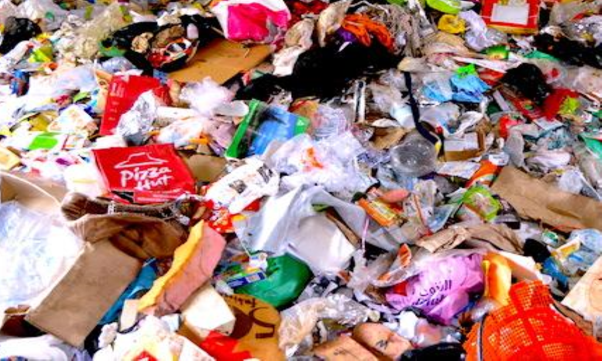
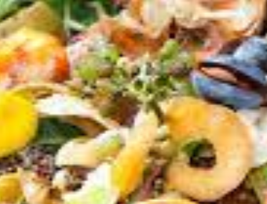
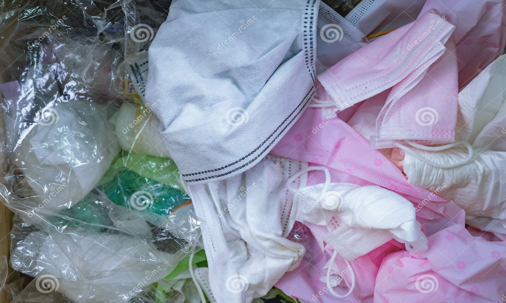

TYPES OF WASTE

Dry Waste
Dry waste consists of waste that does not decay. Dry waste consists of paper, glass, thermocol, Styrofoam, rubber, metal, cloth, empty bottles, stationeries, etc.

Wet Waste
Wet waste is all the kitchen waste that is produced. Eg: vegetable peels, used tea bags, fruits, leftovers, coconut shells, flowers, leaves, meat or nonveg, expired food items, bread, biscuits, etc.

Sanitary Waste
Sanitary Waste means wastes comprising of used diapers, sanitary towels or napkins, tampons,bandages, etc.

E-Waste
E-waste is electronic products that are unwanted, not working, and nearing or at the end of their “useful life.” Computers, televisions, VCRs, stereos, copiers, and fax machines are everyday electronic products.